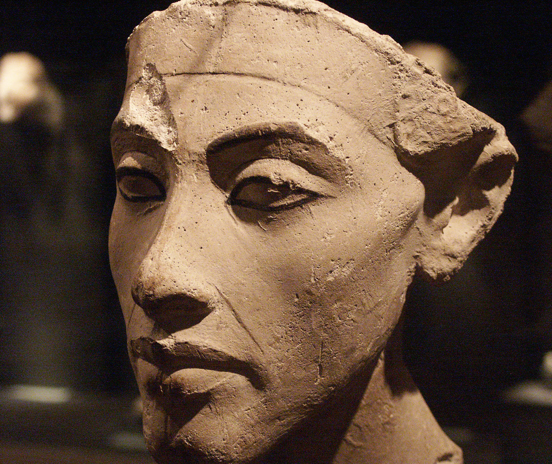

Krajobrazy Rilkego
Blask Atona
Amenofis IV (Amenhotep IV, Echnaton), władca starożytnego Egiptu z XVIII dynastii, syn Amenhotepa III i królowej Teje, mąż królowej Nefertiti, ojciec faraona Tutanchamona.
Reformator, próbował wprowadzić monoteizm, wiarę w jedynego boga Atona. Przeniósł stolicę z Teb do nowo wybudowanego miasta słońca Achetaton (horyzont Atona). Faraon przyjął też nowe imię Echnaton (blask Atona).
Łagodnym przemijaniem
pokwitająca twarz spoczywa
na czaszki płaszczyźnie dawnej, co winnicy
skłonem opada, cała obrócona
w stronę wszechświata, ku ognisku światła.
Rilke podziwiał rzeźbę głowy faraona w Muzeum Egipskim (Neues Museum) w Berlinie. Poświęcił jej także wiersz Głowa Amenofisa IV w Berlinie.
Fragment wiersza Głowa Amenofisa IV w Berlinie w przekładzie A. Pomorskiego